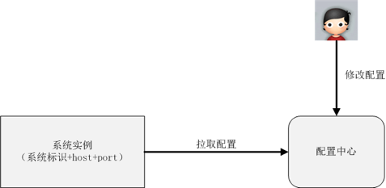

服务层
服务层的主要目标是为了降低系统间的相互关联的复杂度
配置中心
集中管理各个系统的配置
特点
- 集中配置多个系统，操作效率高
- 所有配置在一个集中的地方，检查方便，写作效率高
- 配置中心可以实现程序化的规则检查，避免常见错误
比如检查最小值、最大值、是否是ip地址、是否是url地址等(都可以用正则表达式完成) - 配置中心相当于备份了系统的配置，当某些情况下需要搭建新的环境时，能够快速搭建环境和恢复业务
配置中心简单设计

服务中心
系统间的调用一般通过配置文件记录在各个系统内部，当某个系统接口发生变更时，需要修改大量的配置文件
其他系统通过ip访问a系统，如果a系统每次增加或者删除机器，其他所有系统都要同步修改，工作量很大。
服务中心为了解决跨系统依赖的“配置”和“调度”问题发生时，避免少量数据异常导致整体业务不可用。
服务中心实现
- 服务名字系统
与dns相似，服务名字系统将service名称解析为“host + port + 接口名称”
基本设计如下

- 服务总线系统
由总线系统完成调用，服务请求方不需要直接和服务提供方交互
基本设计如下
消息队列
传统的异步通知方式是由消息生产者直接调用消息消费者提供的接口进行通知的，当业务子系统数量增多时，会导致系统间交互非常复杂和难以管理（因为系统间相互依赖和调用），会形成一个网状的模式。
消息队列实现了跨系统异步通知的中间件系统。
优点
- 整体结构从网状结构变为线性接口，结构清晰
- 消息生产和消息消费解耦，实现简单
- 增加新的消费者，消息生产者完全不需要改动，扩展方便
- 消息队列可以做到高可用、高性能、避免各业务子系统各自独立做一套，减轻工作量
- 业务子系统只需要聚焦业务即可，实现简单